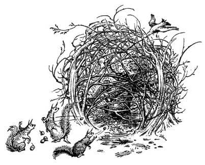
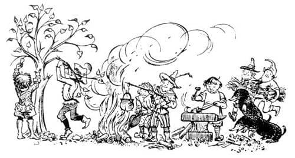
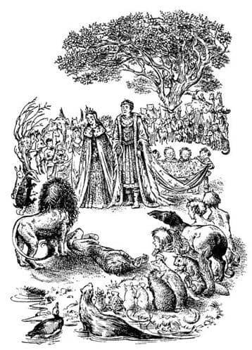

Ağacın Dikilmesi
“Bravo” dedi Aslan yeri sarsan bir sesle. O an Digory bu kelimeyi bütün Narnialıların duyduğunu ve hikâyelerinin bu yeni dünyada babadan oğula geçerek yüzlerce yıl boyunca, belki de sonsuza kadar anlatılacağını sezinledi. Ancak asla kendini beğenmiş bir hali yoktu, Aslan’la yüz yüze olduğu için bu aklına bile gelmemişti. Bu kez, Aslan’ın gözlerinin içine bakabileceğini keşfetti. Dertlerini unutmuştu ve kendini mutlu hissediyordu.
“Bravo, Adem’in oğlu” dedi Aslan yine. “Narnia’nın koruyucusu olacak ağacı senden başka kimse dikemez. Elmayı nehrin kenarına doğru, toprağın yumuşak olduğu yere fırlat.”
Digory denileni yaptı. Herkes o kadar sessizdi ki elmanın çamura düştüğü an çıkardığı yumuşak ses duyulmuştu.
“İyi bir atıştı” dedi Aslan. “Şimdi Narnia’nın kralı Frank ile kraliçesi Helen’in taç giyme töreniyle devam edelim.”
Çocuklar bu ikisini ilk kez fark ettiler. Tuhaf ve zarif giysiler giymişlerdi. Dört cüce Kral’ın, dört nehir perisi de Kraliçe’nin omuzlarından geriye doğru uzanan zengin görünüşlü kumaşları taşıyordu. Başları çıplaktı. Saçlarını serbest bırakan Helen oldukça güzel görünüyordu. Ancak eskisinden böylesine farklı görünmelerini sağlayan ne saçları ne de giysileriydi. Yüzlerinde yeni bir ifade vardı, özellikle Kral’ınkinde. Kral’ın yüzündeki Londra’da arabacılık yaparken edindiği keskin, kurnaz ve kavgacı ifade tümüyle yok olmuştu. Her zaman sahip olduğu cesaret ve nezaket, şimdi yüzünde daha bir belirgindi. Bunun nedeni, yeni dünyanın havası ya da Aslan’la tanışmaları olmalıydı ya da her ikisi birden.
“Hay Allah” diye fısıldadı Kızılkanat, Polly’ye. “Eski efendim en az benim kadar değişmiş! Şimdi gerçek bir efendi olmuş.”
“Evet ama kulağımın dibinde öyle vızıldama” dedi Polly, “gıdıklanıyorum.”
“Şimdi” dedi Aslan, “birkaçınız şu ağaçlarla yaptığınız karmaşık şeyi açın da içinde ne olduğunu görelim.”
Digory, biraz ileride birbirine yakın dört ağacın dallarının, bir tür kafes oluşturmak amacıyla, ince çubuklarla birbirine bağlandığını ve dantel gibi örüldüğünü gördü. İki fil hortumlarıyla ve birkaç cüce küçük baltalarıyla kısa sürede kafesi açtılar. İçeride üç şey vardı. Birincisi altın gibi parlayan küçük bir ağaçtı, ikincisi gümüş gibi parlayan küçük bir ağaçtı, üçüncüsüyse, bu iki ağacın arasında çamurlu giysiler içinde büzülmüş oturan sefil bir yaratıktı.
“Eyvah!” dedi Digory. “Andrew Dayı!”
Bütün bunları açıklamak için biraz geriye gitmemiz gerekiyor. Hatırlarsınız hayvanlar onu ekip, sulamayı denemişlerdi. Sular onu ayılttığında, kendini sırılsıklam, baldırlarına kadar (hızla çamura dönüşen) toprağa gömülmüş ve hayatı boyunca rüyalarında bile görmediği kadar çok sayıda vahşi hayvanla çevrilmiş buldu. Çığlıklar atıp inlemeye başlaması hiç de şaşırtıcı değildi, belki bir bakıma daha iyiydi, çünkü böylelikle herkes (Yaban Domuzu bile) onun canlı olduğuna inanmıştı. Onu kazarak yerden çıkardılar (pantolonu çok tuhaf bir durumdaydı şimdi). Ayakları serbest kalır kalmaz kaçmaya çalıştı ama Fil’in hortumunun hızlı bir şekilde beline dolanmasıyla buna son verdi. Şimdi herkes, Aslan gelip onu görene ve ne yapılacağını söyleyene kadar güvenli bir yerde tutulması gerektiğini düşünüyordu. Böylece etrafında bir tür kafes ya da kümes inşa ettiler. Sonra da akıllarına gelen her türlü yiyeceği sundular.

Eşek bir yığın devedikeni toplayarak kafese attı ama Andrew Dayı buna tenezzül etmedi. Sincaplar onu sert kabuklu yemişlerle topa tuttular, fakat o yalnızca başını elleriyle örtüp bunlardan sakınmaya çalıştı. Birçok kuş çabayla sağa sola uçup onun üstüne solucanlar attı. Ayı özellikle nazikti. Öğleden sonra vahşi bir arı kovanı bulmuştu ve bu değerli yaratık, kendisi yiyeceğine, onu Andrew Dayı’ya getirmişti. En büyük fiyasko da bu oldu. Ayı yapış yapış petek yığınının hepsini kafesin üzerinden içeriye attı ve bu ne yazık ki Andrew Dayı’nın yüzünde bir tokat gibi patladı (arıların hepsi ölü değildi). Bir bal peteğinin yüzüne çarpmasına asla aldırmayacak olan Ayı, Andrew Dayı’nın neden sendeleyerek gerilediğini, kayıp popoüstü oturduğunu anlayamadı. Devedikenlerinin üstüne oturması da gerçekten şanssızlıktı. “Neyse ki” dedi Yaban Domuzu, “yeterince bal yaratığın ağzına girdi. Hiç olmazsa bu, ona iyi gelir.” Hayvanlar bu yaratıktan gerçekten hoşlanmaya başlamışlardı ve Aslan’ın onu kendilerine vereceğini umuyorlardı. Daha akıllıca olanları, Andrew Dayı’nın ağzından çıkan seslerin en azından bir kısmının anlamı olduğu kanısındaydılar. Ona Kanyak adını verdiler, çünkü bu sesi sık sık çıkarıyordu.
Bununla birlikte onu gece boyunca kafeste tutmak zorunda kaldılar. Aslan, gün boyunca yeni Kral ve Kraliçe’ye talimat vermekle ve diğer önemli şeyleri yapmakla meşgul olmuştu ve “zavallı, yaşlı Kanyak” ile uğraşamamıştı. Ona atılan kabuklu yemişler, armutlar, elmalar ve muzlarla akşam yemeği oldukça iyi geçmişti, fakat iyi bir gece geçirdiğini söylemek doğru olmazdı.
“Çıkarın şu yaratığı” dedi Aslan. Fillerden biri hortumuyla Andrew Dayı’yı kaldırarak Aslan’ın ayaklarının dibine koydu. Andrew Dayı korkudan kımıldayamıyordu.
“Lütfen, Aslan” dedi Polly, “onun korkusunu yatıştıracak bir – bir şeyler söyleyebilir misin? Sonra da onun yeniden buraya gelmesini engelleyecek bir şeyler yapabilir misin?”
“Yeniden gelmek isteyebilir mi sence?” dedi Aslan.
“Şey, Aslan” dedi Polly, “başka birini gönderebilir. Lamba direğinden koparılmış çubuğun lamba ağacına dönüşmesi onu o kadar heyecanlandırdı ki o şimdi şey sanıyor—”
“Budalalık ediyor, çocuğum” dedi Aslan. “Bu dünyada şu birkaç gündür yaşam fışkırıyor, çünkü onu yaşama çağırdığım şarkı hâlâ havada dolanıyor ve yerlerde gürlüyor. Bu çok uzun sürmeyecek. Fakat ben bunu, bu yaşlı günahkâra söyleyemem ve onu rahatlatamam da; kendini, benim sesimi işitemez hale getirdi. Onunla konuşsam, sadece kükreme ve hırıltılar duyacak. Ey Ademoğulları, size iyilik yapacak şeylere karşı nasıl da kendinizi kapatıyorsunuz! Fakat hâlâ alabileceği tek hediyeyi ona vereceğim.”
Kocaman başını çok üzgün bir tavırla eğdi ve büyücünün dehşete düşmüş yüzüne doğru soludu. “Uyu” dedi. “Uyu ve birkaç saatliğine kendine ettiğin bütün eziyetlerden kurtul.” Andrew Dayı o an gözlerini kapattı ve yana doğru kıvrılıp sakin sakin nefes almaya başladı.
“Onu şuraya taşıyın ve yatırın” dedi Aslan. “Cüceler! Sanatınızı gösterin. Kral ve Kraliçeniz için iki tane taç yapmanızı istiyorum.”
Hayal edebileceğinizden daha fazla sayıda cüce Altın Ağaç’a doğru koştu. Göz açıp kapayıncaya kadar ağacın bütün yapraklarını ve dalların da bir kısmını koparmışlardı bile. Ve şimdi çocuklar ağacın yalnızca altın gibi görünmediğini, sahiden de gerçek, yumuşak altın olduğunu gördüler. Kuşkusuz bu ağaç, Andrew Dayı başüstü çevrildiğinde onun cebinden düşen yarım liralardan bitmişti; aynen gümüş ağacının da yarım şilinlerden bittiği gibi. Nasıl olduysa, bir anda yakmak üzere yığınlarla çalı çırpı, küçük bir örs, çekiçler, maşalar ve körükler ortaya çıktı. Az sonra (o cüceler işlerini nasıl da seviyorlardı!) ateş harlamış, körükler gürlemeye başlamıştı. Altın eriyor ve çekiçler tınlıyordu. Aslan’ın önceden yeri eşmeye (en sevdikleri iş buydu) gönderdiği iki köstebek, cücelerin ayakları dibine bir yığın değerli taş döktüler. Küçük zanaatkârların akıllı parmakları altında iki taç şekil almaya başladı – modern Avrupa taçları gibi ağır şeyler değil ama gerçekten takabileceğiniz ve takınca daha zarif görüneceğiniz hafif, kibar, harika şekilli yuvarlak taçlar. Kral’ınki yakutlarla, Kraliçe’ninki zümrütlerle süslenmişti.

Taçlar nehirde soğutulduktan sonra Aslan, Frank ve Helen’i önünde diz çöktürüp taçlarını başlarına yerleştirdi. Sonra dedi ki, “Narnia’nın Kral ve Kraliçesi, Narnia’ya, adalara ve Archenland’e gelecek olan birçok kralın anne ve babası, ayağa kalkın. Adil, merhametli ve cesur olun. Sizleri kutsuyorum.”
Bu sözlerin ardından, herkes sevinç çığlıkları atarken ya da uluyup, kişneyip, kanatlarını çırparken, saltanatın sahibi olan çift ciddi ve biraz da mahcup bir edayla duruyor, bu onları daha da soylulaştırıyordu.
Digory hâlâ sevinçle bağırırken arkasında Aslan’ın sesi yankılandı:
“Bakın!”
Herkes başını çevirdi, kalabalık şaşkınlık ve mutlulukla derin derin nefes aldı. Biraz ileride, daha önce kesinlikle orada olmayan ve başlarının üzerinde kule gibi yükselen bir ağaç gördüler. Hepsi taç giyme töreni ile meşgulken, sanki göndere bayrak çekilir gibi sessizce ve hızla büyümüş olmalıydı. Etrafa yayılmış dalları gölgeden ziyade ışık veriyor gibiydi ve gümüş elmalar, yaprakların altında yıldız gibi parlıyorlardı. Ancak görüntüden daha çok, ağaçtan gelen koku herkesin nefesini tutmasına sebep olmuştu. O an için başka bir şey düşünmek çok zordu.
“Adem’in oğlu” dedi Aslan, “iyi dikmişsin. Ve siz Narnialılar, bu ağacı korumak sizin ilk göreviniz olsun, çünkü o sizin kalkanınız. Size bahsettiğim Cadı uzaklara, dünyanın kuzeyine kaçtı; orada kara büyüyle güçlenerek yaşayacak. Fakat bu ağaç yaşadıkça asla Narnia’ya gelemeyecek. Bu ağacın yüz mil yakınına gelmeye cesaret edemez, çünkü sizler için sağlık, yaşam ve sevinç demek olan bu koku, ona ölüm, dehşet ve keder getirir.”
Aslan hızla başını çevirip (yelesinden altın renkli ışıklar saçarak) iri gözlerini çocuklara diktiğinde herkes ciddiyetle ağaca bakmaktaydı. “Ne var çocuklar?” dedi, çünkü onları birbirlerini dürtüp fısıldaşırken yakalamıştı.

“Aaa – Aslan, efendim” dedi Digory, kulaklarına kadar kızararak, “sana söylemeyi unuttum. Cadı o elmalardan birini yedi, ağacın tohumu olan o elmalardan birini.” Gerçekten düşündüklerinin hepsini söyleyememişti ama Polly hemen onun yerine konuştu (Digory, aptal gibi görünmekten Polly’ye kıyasla daha fazla korkuyordu).
“Onun için biz düşünüyorduk ki, Aslan” dedi, “bir hata olmalı, Cadı gerçekten o elmaların kokusuna dayanamıyor olamaz.”
“Neden öyle düşünüyorsun, Havva’nın kızı?” diye sordu Aslan.
“Eee, bir tane yedi.”
“Çocuğum” dedi, “geri kalan elmaların şimdi ona dehşet vermesinin nedeni o. Yanlış yer ve zamanda meyve koparıp yiyenlerin sonu budur. Meyve iyidir ancak ondan sonra hep nefret ederler.”
“Oh, anlıyorum” dedi Polly. “Ve o elmayı başka amaçla kopardığından onun işine yaramayacak. Yani onun hep genç kalmasını sağlamayacak?”
“Ne yazık ki” dedi Aslan başını sallayarak “sağlayacak. Her şey daima doğası gereği çalışır. Onun gönlünün arzusu yerine geldi; tükenmek bilmeyen bir güce sahip oldu. Bir tanrıça gibi sonsuz günleri var. Fakat şeytani bir kalbin varsa günlerinin uzunluğu yalnızca ıstırabın uzunluğu demektir ve o bunu şimdiden öğrenmeye başladı. Herkes istediğini elde eder; fakat bu her zaman hoşlarına gitmez.”
“Ben – ben de neredeyse bir tane yiyecektim, Aslan” dedi Digory. “Ben de mi—”
“Sen de çocuğum” dedi Aslan. “Çünkü meyvenin büyüsü her zaman etkilidir – etkili olmalı – fakat kendileri için dilek tutup meyve koparanların isteği doğrultusunda etkili olmaz. Eğer herhangi bir Narnialı kendiliğinden bir elma çalıp Narnia’yı korumak üzere buraya dikseydi, bitecek ağaç Narnia’yı korurdu. Ama bunu Narnia’yı Charn gibi güçlü ve zalim bir imparatorluk yaparak korurdu, olmasını istediğim şefkatli ülke gibi değil. Cadı seni başka bir şey yapman için kandırmaya çalıştı değil mi oğlum?
“Evet, Aslan. Anneme bir elma götürmemi istedi.”
“Senin anlayacağın elma onu iyileştirirdi ancak şunu bil ki bundan ne sen ne de o memnun kalırdınız. Gün gelir sen ve annen geriye bakıp, bu hastalıktan ölmenin daha iyi olduğunu söylerdiniz.”
Digory bir şey söyleyemedi çünkü gözyaşları içindeydi ve boğazı düğümlenmişti. Annesinin hayatını kurtarma umudunu tümden yitirmişti; fakat aynı zamanda Aslan’ın olacakları bildiğini ve sevdiğiniz birini ölüme terk etmekten daha kötü şeylerin olabileceğini biliyordu. Ama şimdi Aslan, neredeyse fısıldayarak yeniden konuşmaya başlamıştı:
“Çalınmış bir elmayla olacak olan buydu, oğlum. Şimdi olacak olan bu değil. Şimdi sana vereceğim şey mutluluk getirecek. Senin dünyanda sonsuz yaşam getirmeyecek, ama iyileştirecek. Git ağaçtan annene bir elma kopar.”
Digory anlamakta güçlük çekiyordu. Bir saniye için sanki dünya tersine dönmüş ve içi dışına çıkmıştı. Sonra, sanki rüyada gibi, ağaca doğru yürümeye başladı. Kral ve Kraliçe’yle birlikte tüm diğer yaratıklar da onu alkışlıyorlardı. Elmayı kopardı, cebine koydu ve sonra Aslan’ın yanına geldi.
“Lütfen” dedi, “şimdi eve gidebilir miyiz?”
“Teşekkür ederim” demek istemiş, ancak unutmuştu. Ve Aslan bunu anlamıştı.